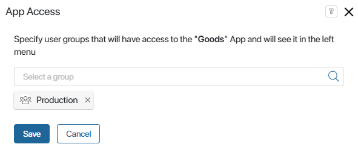
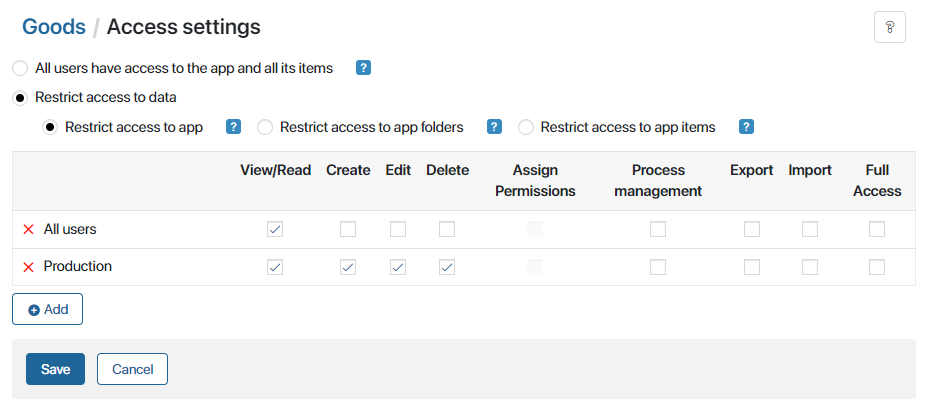
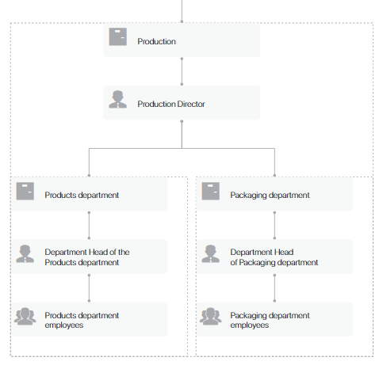
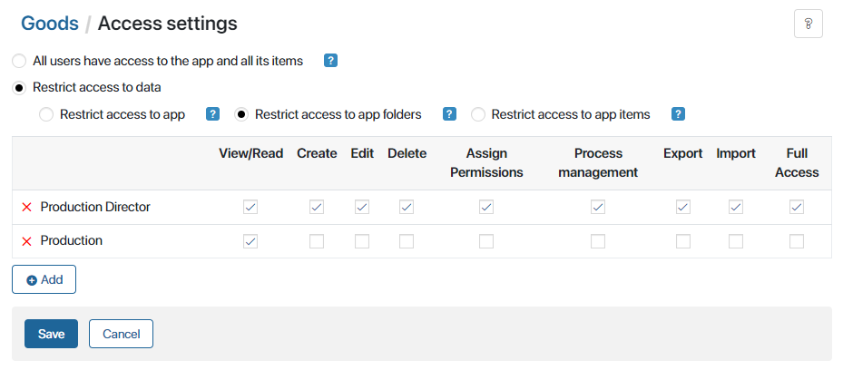
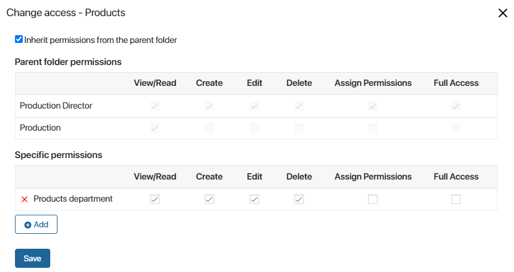
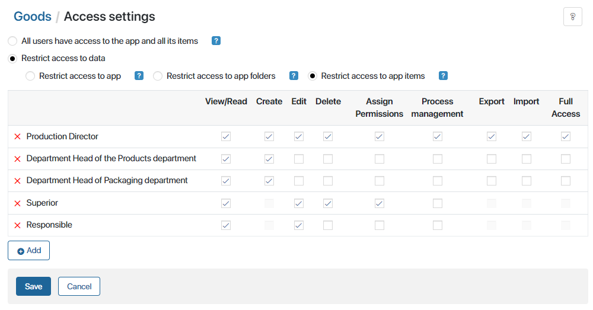
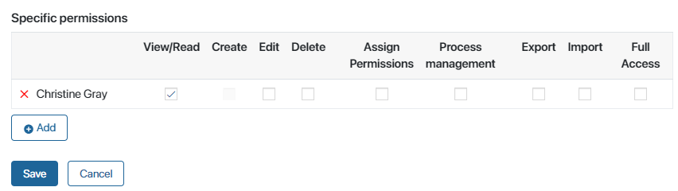
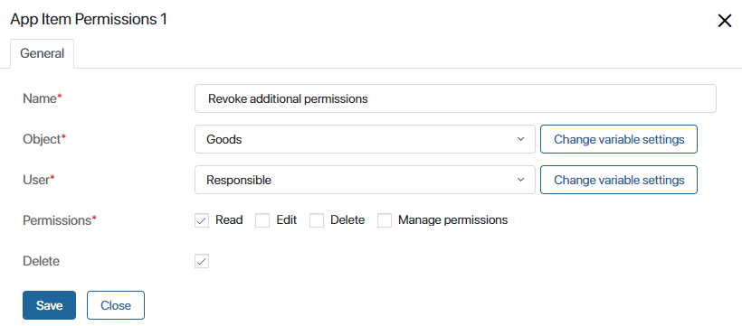

You can manage access to a workspace or to an app as well as restrict access to data in the whole app, in its folders, or in specific items. You can read about configuring these settings in the corresponding articles. In this article, let’s consider some examples of how these settings work together.
Case 1. Access to an app and its data
Consider the following example.
The Goods app is used by employees involved in production. They can view, create, edit, and delete goods. For all other users, this app should be hidden in the left menu. At the same time, goods are regularly used in requests and business processes set up in the company. So, all employees need to have the permission to view goods using direct links from tasks and requests.
Set up the following access settings:
- In the menu of the Goods app, select App Access.
- In the window that opens, add the Production group that includes all the employees working in production.

Now only the employees involved in production can see the Goods app in the left menu. Other users can only work with goods using direct links.
- In the menu of the Goods app, select Access Settings.
- Enable the Restrict access to data > Restrict access to app option.
- Set up permissions for the All users and Production groups.

Now employees working in production will be able to view, create, edit, and delete goods, while other users will only be able to view the goods from the pages of tasks assigned to them or requests they are responsible for.
Case 2. Access to data based on app folders
Consider the following example.
There are two production departments: one works with products, and the other one with packaging. For that reason, the Goods app has two folders: Products and Packaging. All app items in the all are placed in one of these folders. Employees should be able to view, create, edit, and delete only the goods produced by their department. At the same time, any employee involved in production should be able to view all goods. Full access to goods should only be given to the Production Director.
Solution:
- Configure the organizational chart so that it includes the production department positions.

Now you can set up different permissions based on this org chart.
- Set up access to the Goods app for employees involved in production.
- In the menu of the Goods app, select Access Settings and enable the Restrict access to data > Restrict access to app folders option.
- Set up the necessary permissions for the Production Director and the Production group that includes all employees working in production.

- Set up specific permissions for the Goods folder.

Now only employees from the Products department can create, edit, and delete goods in the Products folder. The Products folder will also be displayed to them in the left menu of the Goods app. Other employees involved in production will only be able to view items from this folder. They will be available in the All folder, and the Products folder will not be displayed to them.
- In the same way, set up specific permissions for the Packaging folder, selecting Packaging department.
Case 3. Access to app items and specific permissions
Let’s consider an example that elaborates on the previous one. Suppose that information about goods is confidential, and the logic of the access settings has to include the following conditions:
- Only the Production Director has full access to all goods and can manage permissions granted to all other employees.
- Department heads can create and view all goods, but they can only edit and delete goods related to their department and manage permissions granted to employees working in it.
- Regular production employees can see and edit only the goods they are responsible for.
- Employees from other departments can work with goods pages, too, but they only have temporary access to the app items within tasks associated with them.
Solution:
- Go to the form settings of the Goods app item form and add the Responsible and Superior properties of the Users type. Now you can select these properties in the access settings. For instance, a department head can only edit goods produced by their department and assign permissions only to their subordinates.
- Set up access to the Goods app for employees involved in production.
- In the app’s menu, select Access Settings.
- Enable the Restrict access to data > Restrict access to app items option.
- Set up general app item permissions for different production positions and for the app properties you created: Responsible and Superior.

- Temporary access to an app item can be granted in the following ways:
- Manually on the app item page. This option is available to superiors who have the Assign Permissions access option selected.
- In a business process. Here access can be granted in swimlane settings, in a script, or in the App Item Permissions activity.
For example, if you enable the Permissions option in the settings of a swimlane, the user will be able to view an app item in a task assigned to them. The permission to view the item set up in the swimlane will be shown in the app item access settings, in the Specific permissions section.

When the task in the swimlane is completed, you can revoke the permissions you granted if they are no longer needed. To do that, place the App Item Permissions activity after the task on the business process diagram. In the activity settings, select Read in the Permissions field and check the Delete box.
